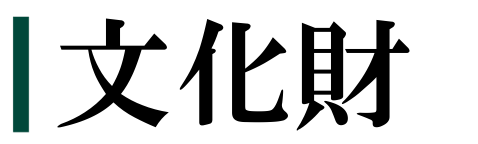
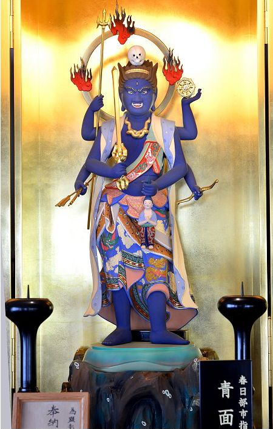

指定年月日 平成24年3月27日
中世以降、庶民の間には庚申の晩に夜通し念仏や歓談をする庚申信仰が広まり、崇拝の対象として青面金剛像などが祀られるようになりました。本像は崇蓮寺境内の庚申堂の本尊として安置されていたものです。胎内の墨書銘には、念仏2000回の成就を供養するために、同寺を開いた忍誉吟随上人を導師として、寛文7年(1667)に本像が制作されたことが記されています。
形状は忿怒形といわれ、髪を逆立たせ、3つの目をいからし、牙を出しています。頭頂部には髑髏を配置し、首には蛇を巻いています。6本の腕には宝剣や女人、輪宝、三叉の戟、弓、矢を持っています。造りはヒノキ材の寄木造で、玉眼が埋め込まれ、身体を青色に彩色された立像です。
青面金剛像の多くは石造ですが、本像は類例の少ない木造であること、制作年代が明らかであることから、江戸時代前期の庚申信仰の様相を示す貴重な資料といえます。
青面金剛像
胎内の墨書